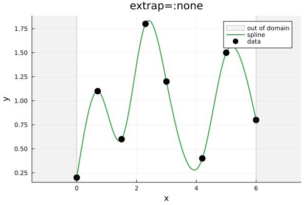
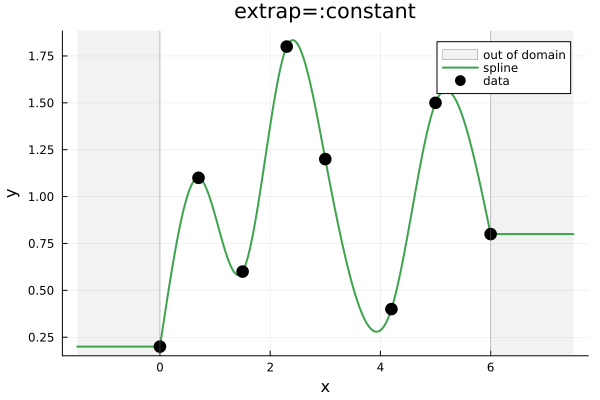
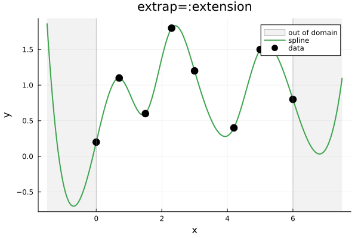
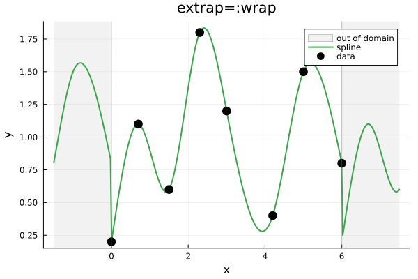
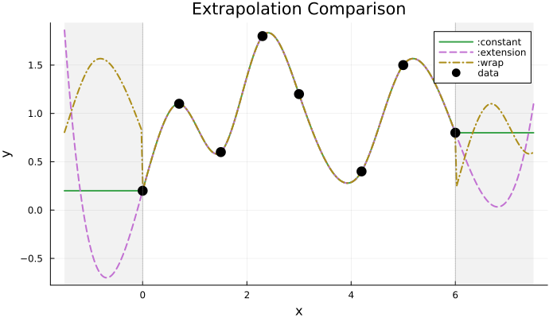

Extrapolation
Extrapolation controls behavior when query points fall outside the data domain [x[1], x[end]].
Overview
Use the extrap keyword argument to specify extrapolation behavior:
# One-shot: specify extrap per call
cubic_interp(x, y, xq; extrap=:constant)
linear_interp(x, y, xq; extrap=:extension)
# Interpolant: extrap is fixed at creation
itp = cubic_interp(x, y; extrap=:extension) # all future calls use :extension
itp(xq) # uses :extensionBoth linear_interp and cubic_interp support the same extrapolation modes.
| Mode | Behavior |
|---|---|
:none | Throws DomainError (default) |
:constant | Returns boundary values |
:extension | Extends boundary polynomial |
:wrap | Wraps coordinates periodically (no smoothness enforced) |
Examples
using FastInterpolations
# Sample data
x = [0.0, 0.7, 1.5, 2.3, 3.0, 4.2, 5.0, 6.0]
y = [0.2, 1.1, 0.6, 1.8, 1.2, 0.4, 1.5, 0.8]
# Query points (including extrapolation region)
xq = range(x[1] - 1.5, x[end] + 1.5, 300)extrap=:none (Default)
Throws DomainError for out-of-domain queries. Use when extrapolation is unexpected.
julia> cubic_interp(x, y, -1.0; extrap=:none) # scalar query outside domain
ERROR: DomainError with -1.0:
query point outside interpolation domain [0.0, 6.0]
julia> cubic_interp(x, y, xq; extrap=:none) # vector query (xq includes out-of-domain points)
ERROR: DomainError with -1.5:
query point outside interpolation domain [0.0, 6.0]Only interior queries succeed:
yq = cubic_interp(x, y, range(x[1], x[end], 200); extrap=:none)
extrap=:constant
Returns boundary values: y[1] for left, y[end] for right.
yq = cubic_interp(x, y, xq; extrap=:constant)
extrap=:extension
Extends the boundary polynomial beyond the domain.
yq = cubic_interp(x, y, xq; extrap=:extension)
extrap=:wrap
Wraps coordinates periodically:
\[S(x + \tau) = S(x), \quad \tau = x_{\text{end}} - x_1\]
This is purely coordinate mapping—it does not enforce any physical conditions at the boundary. The spline may have discontinuities in value, slope, or curvature at the wrap point.
If you need C² continuity at the periodic boundary, use bc=PeriodicBC() with cubic_interp. This enforces $S(x_1) = S(x_{\text{end}})$, $S'(x_1) = S'(x_{\text{end}})$, and $S''(x_1) = S''(x_{\text{end}})$.
yq = cubic_interp(x, y, xq; extrap=:wrap)
Comparison
# All three modes on same plot
y_const = cubic_interp(x, y, xq; extrap=:constant)
y_ext = cubic_interp(x, y, xq; extrap=:extension)
y_wrap = cubic_interp(x, y, xq; extrap=:wrap)
Summary
| Mode | Behavior | Use Case |
|---|---|---|
:none | DomainError | Strict domain enforcement (default) |
:constant | Returns boundary values | Physical constraints |
:extension | Continues boundary polynomial | Smooth continuation |
:wrap | Wraps coordinates (no smoothness) | Cyclic data (see PeriodicBC for C² continuity) |
See Also
- Derivatives: Analytical derivatives with extrapolation
- Cubic Splines: Boundary conditions and smooth periodicity